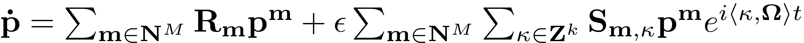
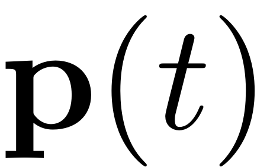
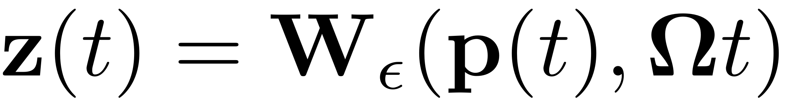
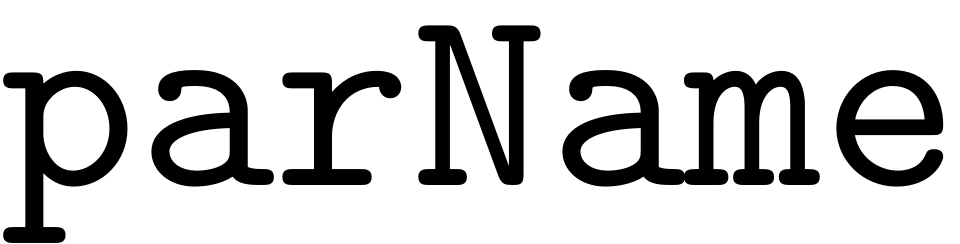
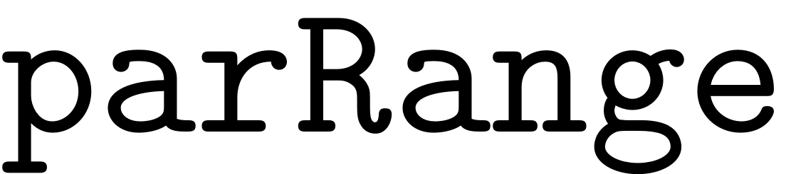
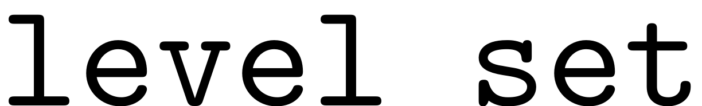

Spectral Submanifolds (SSM)
Contents
An object of the SSM class inherits is basic properties from the invariant manifold class. It thus requires an underlying dynamical system to be initialised via
S = SSM(DS);
The reduced dynamics on the SSM constitute an exact reduced order model for the full dynamical system. This is a direct consequence of the invariance of the SSM which guarantees that orbits on the manifold are indeed also trajectories of the full system. The implications of this are tremendous. Any structure such as periodic orbits, invariant tori and families of bifurcations which are encountered for the ROM directly transfer to the full dynamical system. Finding an invariant torus in a system of possibly thousands and even hundreds of thousands of degrees of freedom for instance, boils down to the analysis of a dynamical system including only a couple of DOFs via the analysis of the ROM

This dynamical system is now in a regime which is of ideal size to use tools such as continuation. These methods are powerful and versatile for small systems and can be used for a detailed analysis of the reduced dynamics. Any resulting structure can be directly mapped back via the SSM parametrisation. A general trajectory  of the reduced dynamics is related to its full system equivalent by

Functionalities
Backbone Curves
For computing backbone curves in the full system directly from the ROM on the SSM, one can make use of the method
BB = S.extract_backbone(masterModes,omegaRange, order);
A tutorial for this functionality is presented in Backbone Curves.
Computation of FRCs
Forced response curves can be computed using the method
FRC = S.extract_FRC(parName, parRange, order)
The  variable can be set to 'freq' or 'amp', depending on whether a FRCs is to be computed with varied forcing frequency or amplitude. The  variable is used to set the range over which the FRC is computed. Furtermore the order up to which the approximation of the SSM is to be computed has to be specified.
For the special case of external excitation and two-dimensional SSMs the steady states of the reduced dynamics can be obtained directly without falling back to other methods. A coordinate change of the reduced dynamics to polar coordinates leads to an analytical formula which characterises these periodic orbits and furthermore allows for finding isolated regions of response. The intersections of the zero-manifolds of the trivial solutions to these dynamics directly yield the forced response. These results have been developed in a series of papers and can be accessed in \cite{isolatedresponsesten,Jain2021HowModels, Thurnher2022}. To make use of these results, choose the  method.
Set(S.FRCOptions, 'method','level set')
The methods and FRC computations in general are introduced in the FRC-Tutorial.
Options for the computation of FRCs:
nRho = 100 % number of discrete rho values in the range [0, rhomax] (relevant for method == 'level set') nPar = 100 % number of discrete parameter (Omega/epsilon) values in the parameter range nPsi = 100 % number of discrete psi values in the range [0, 2*pi] (relevant for method == 'level set') nt = 128 % number of discrete time intervals over which the periodic orbit is discretized (relevant for post-processing only) rhoScale = 1 % factor for increasing rhomax polar FRC nCycle = 200 % number of time integration cycles (relevant for numerical time integration) omegaSampStyle = 'uniform' % 'uniform', 'cocoOut', 'cocoBD' (relevant for method == 'continuation ep/po') initialSolver = 'forward' % 'forward', 'fsolve' (relevant for method == 'continuation ep/po') coordinates = 'polar' % coordinates for solving reduced dynamics: 'polar', 'cartesian' sampStyle = 'cocoBD' % 'uniform', 'cocoOut', 'cocoBD' (relevant for method == 'continuation ep/po') method = 'level set' % 'level set', 'continuation ep', 'continuation po' saveIC = true % whether save initial conditions on periodic orbit or not init % initial solution guess (relevant for method == 'continuation ep/po') frac = [1 1] % [frac1,frac2] can be used to % tune the range of subintervals. Specifically, [oma, omb] will % be changed as [frac1*oma, frac2*omb] except on the end points of frequency range. outdof = [] % output degree-of-freedom p0 = []; % parameters (epsilon,omega) in initial solution guess used in continuation z0 = []; % states (in slow-time reduced dynamics) in initial solution guess used in continuation nonAutoParRedCom = false % compute_perturbed_wisker is called in the parallel computation of non-autonomous SSMs for % each sampled excitation frequency. The manifold object is transferred in such a call. This % communication cost is intenstive in parallel computation. To reduce the communication load, % we calculate the non-autonomous directly, instead of calling the routine if the field is true parSamps = [] % solution at specific parameter values used for comparison or verification torRotDiret = 'pos' % 'pos', 'neg' (rotation direction of tori) torNumSegs = 10 % number of Fourier modes in the approximation of tori torPurtb = 1e-4 % perturbation to Neimark-Sacker periodic orbits to yield initial tori
Computation of Stability Diagrams
To compute Stability Diagrams for parametrically resonant systems one may use
SD = S.extract_Stability_Diagram(resModes, order, OmegaRange,epRange,'amp', p0,'PD',PlotSD);
The method is described in more detail in the tutorial on the computation of Stability Diagrams.
Continuation of the ROM
The computational routine is coupled internally with the continuation package COCO, which allows for direct analysis of the ROM provided by the reduced dynamics. Due to its low dimensionality, the resulting continuation problems can be solved efficiently and fast by COCO. The features provided in SSMTool via the integration with COCO include the detection and continuation of families of equilibria, periodic orbits, invariant tori and various bifurcations. Detailed explanations and description of the different methods are listed in Continuation of Reduced Dynamics.
For the continuation of the reduced dynamics, the following continuation-options may be passed to the COCO wrapper:
NPR = 10 % frequency of screen outputs NSV = 10 % frequency of storing solutions to disk NAdapt = 0 % adaptation period, 0 == off h0 = 0.1 % initial step size h_max = 0.5 % max step size h_min = 0.01 % min step size h_fac_max = 2 % max step size adaptation factor h_fac_min = 0.5 % min step size adaptation factor MaxRes = 0.1 % max residual norm in prediction bi_direct = true % go in both directions or not PtMX = 100 % max continuation step al_max = 7 % max angle between consecutive tangents theta = 0.5 % projection parameter used in atlas kd nSample = 1 % number of samples by which plots should be spaced % settings for correction ItMX = 10 % max. number of iterations TOL = 1e-6 % tolerance for Newton iteration % settins for collocation NTST = 10 % number of mesh intervals NCOL = 4 % number of collocation points MXCL = true % enable/disable termination when discretization error exceeds tolerance % branch switching branchSwitch = false; branchLevels = 1; % Does not support multiple level currently % settings for forward IntItMX = 10; % max. number of Newton iterationn in numerical integration RelTol = 1e-6; % tolerance for stopping Newton iteration Nsteps = 500; % number of time-stepping steps alpha = 0; % algorithm parameter in Newmark integration scheme rhoinf = 0.9; % algorithm parameter in Galpha integration scheme % settings for po neigs = 100; % number of eigenvalues used in bifurcation event function (closest to unit cycle) % setting for vector field vectorized = true